The Fire Necromancer's volcanic pterosaur: six looks of the adult, each with its young reborn form behind it (the one that bursts out of the egg when you beat the adult), and its egg. Its volcano is built in the game by the showcase, behind the gallery. In the game: /dross showcase boss_designs emberdactyl.
originals.png · lineup.png · all_designs_1.png · all_designs_2.png
Drawn by tools/fire/volcano_preview.py from the blocks the game placed (flat colours: the shapes and the lava, not the textures).
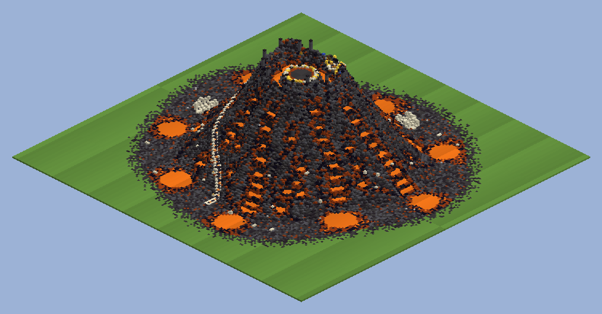
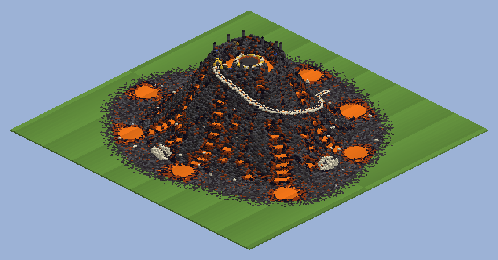
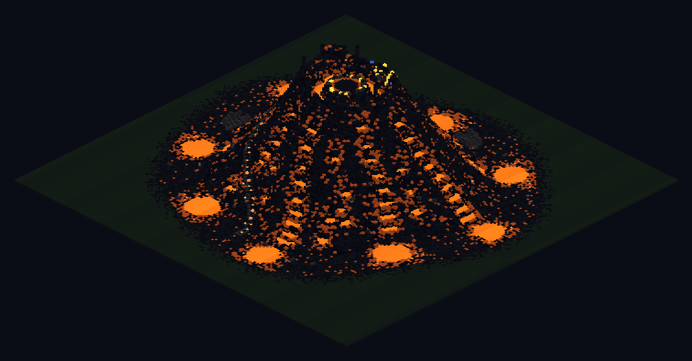
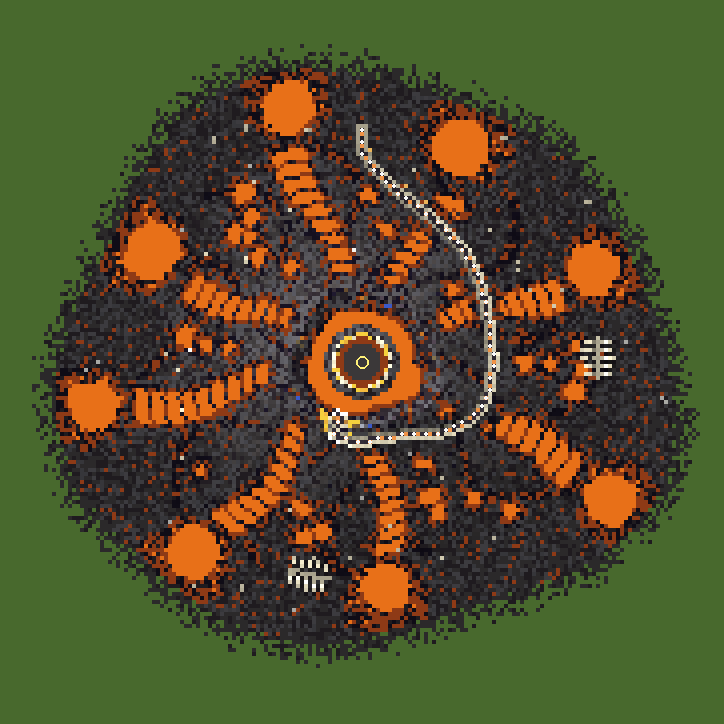
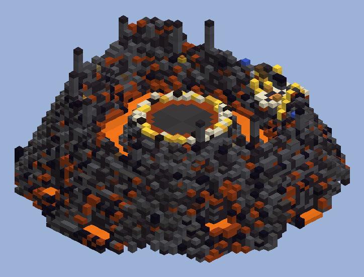
The Emberdactyl, a volcanic pterosaur nesting on top of its own volcano, guarding its egg; it comes for you within about 60 blocks of the volcano, fights mostly in the air (dives, fly-bys, wing gusts that spin up fire tornadoes) and lands for melee. Beat it (300 health) and a younger, faster, weaker one (150) bursts out of the egg. This look: the classic: a long crest swept back off its skull, a charcoal hide cracked with magma, dark red wings veined with glowing lines.
A: the adult, about 19 blocks across its wings.
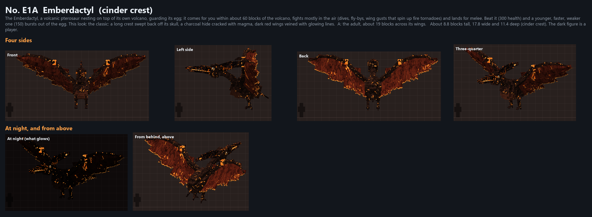
B: its young reborn form: smaller, sleeker, its wings swept back for speed, brighter and hotter.
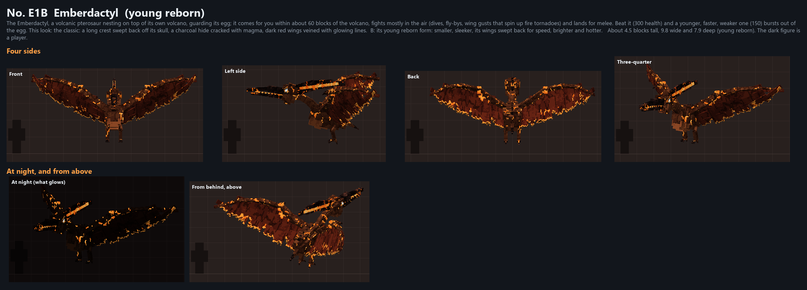
The Emberdactyl, a volcanic pterosaur nesting on top of its own volcano, guarding its egg; it comes for you within about 60 blocks of the volcano, fights mostly in the air (dives, fly-bys, wing gusts that spin up fire tornadoes) and lands for melee. Beat it (300 health) and a younger, faster, weaker one (150) bursts out of the egg. This look: a crater on its head ringed with horns, lava glowing in it; a hide of cracked basalt dusted with ash; wings burnt through with holes.
A: the adult, about 19 blocks across its wings.
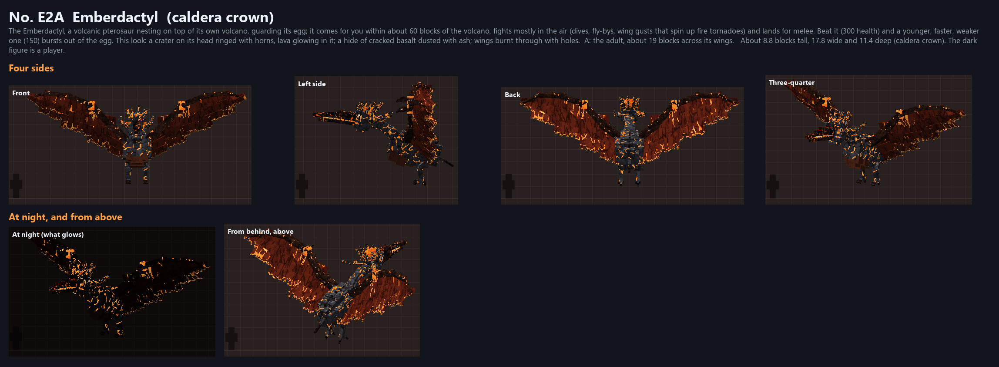
B: its young reborn form: smaller, sleeker, its wings swept back for speed, brighter and hotter.
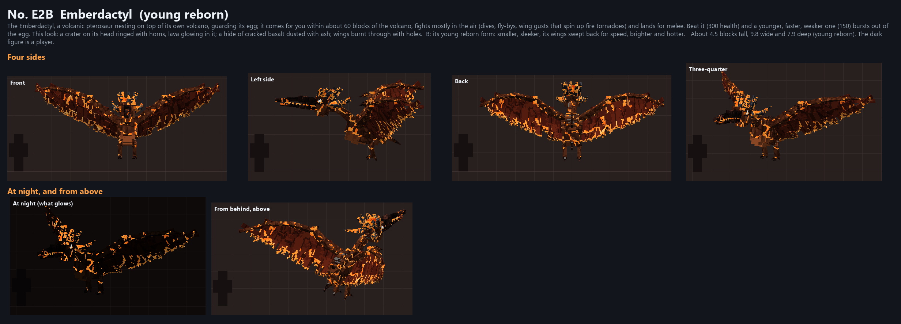
The Emberdactyl, a volcanic pterosaur nesting on top of its own volcano, guarding its egg; it comes for you within about 60 blocks of the volcano, fights mostly in the air (dives, fly-bys, wing gusts that spin up fire tornadoes) and lands for melee. Beat it (300 health) and a younger, faster, weaker one (150) bursts out of the egg. This look: sleek and glassy: twin blade crests of obsidian, a hide of obsidian veined with lava, blades along its wings' leading edges.
A: the adult, about 19 blocks across its wings.
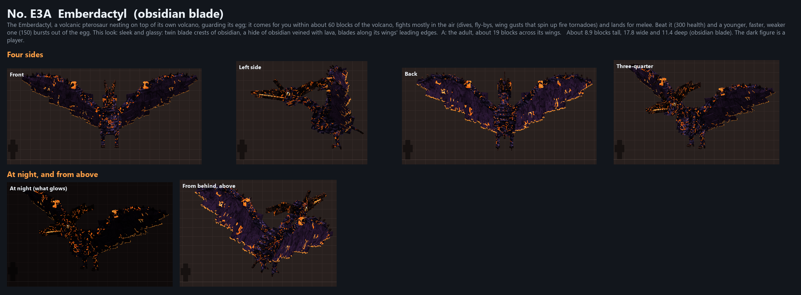
B: its young reborn form: smaller, sleeker, its wings swept back for speed, brighter and hotter.
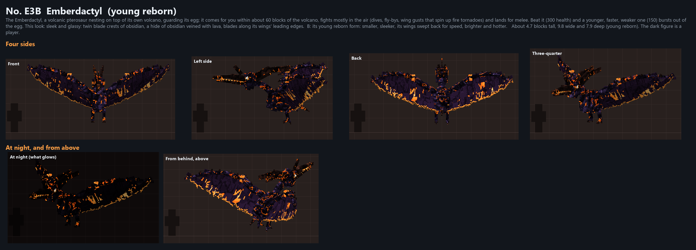
The Emberdactyl, a volcanic pterosaur nesting on top of its own volcano, guarding its egg; it comes for you within about 60 blocks of the volcano, fights mostly in the air (dives, fly-bys, wing gusts that spin up fire tornadoes) and lands for melee. Beat it (300 health) and a younger, faster, weaker one (150) bursts out of the egg. This look: a tall sail of glowing membrane on a bony frame over its head, and a long tail ending in a burning vane.
A: the adult, about 19 blocks across its wings.
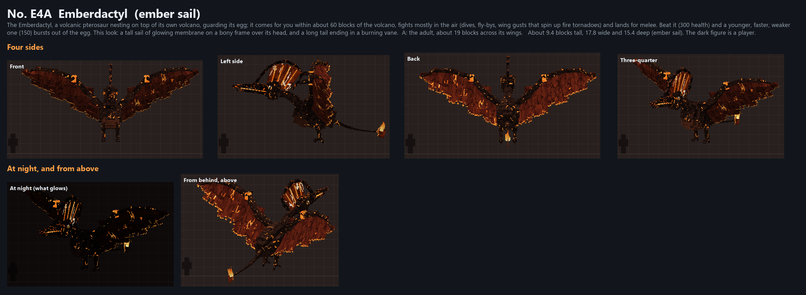
B: its young reborn form: smaller, sleeker, its wings swept back for speed, brighter and hotter.
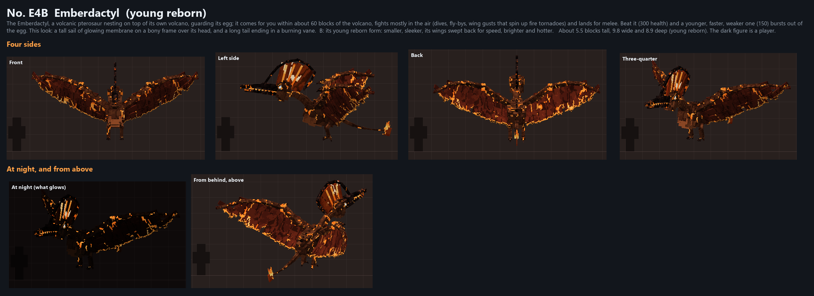
The Emberdactyl, a volcanic pterosaur nesting on top of its own volcano, guarding its egg; it comes for you within about 60 blocks of the volcano, fights mostly in the air (dives, fly-bys, wing gusts that spin up fire tornadoes) and lands for melee. Beat it (300 health) and a younger, faster, weaker one (150) bursts out of the egg. This look: more lava than hide: molten skin under a cracking crust, plates of crust on its back, its wings' veins blazing and their edges burning, magma dripping off it.
A: the adult, about 19 blocks across its wings.
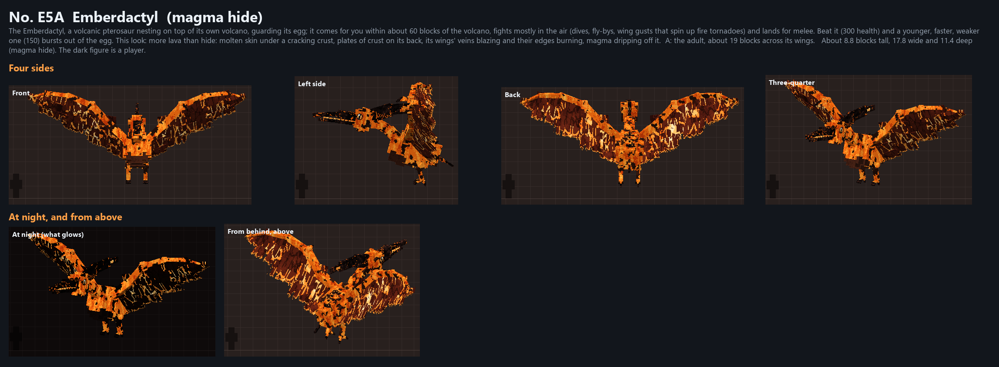
B: its young reborn form: smaller, sleeker, its wings swept back for speed, brighter and hotter.
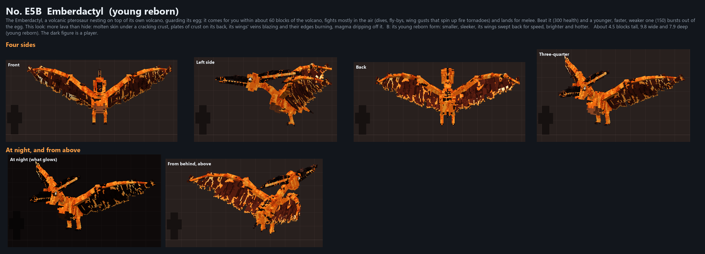
The Emberdactyl, a volcanic pterosaur nesting on top of its own volcano, guarding its egg; it comes for you within about 60 blocks of the volcano, fights mostly in the air (dives, fly-bys, wing gusts that spin up fire tornadoes) and lands for melee. Beat it (300 health) and a younger, faster, weaker one (150) bursts out of the egg. This look: ash grey and sooty, a crest on its snout and another on its skull, a glowing throat pouch, smoke-dark wings with burning edges.
A: the adult, about 19 blocks across its wings.
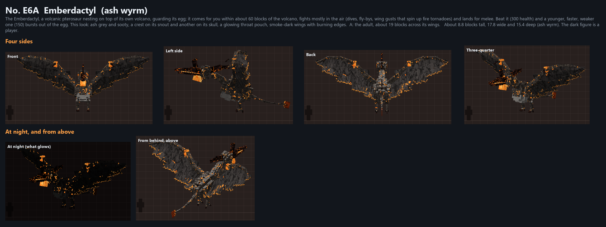
B: its young reborn form: smaller, sleeker, its wings swept back for speed, brighter and hotter.
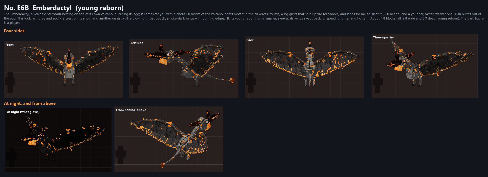
The egg the Emberdactyl guards in its nest on top of its volcano. Nothing breaks it; when the adult falls, the egg cracks with light and its young reborn form bursts out to fight on. About 3 blocks tall.
A: glassy obsidian veined with lava, as if poured and cooled round something burning.
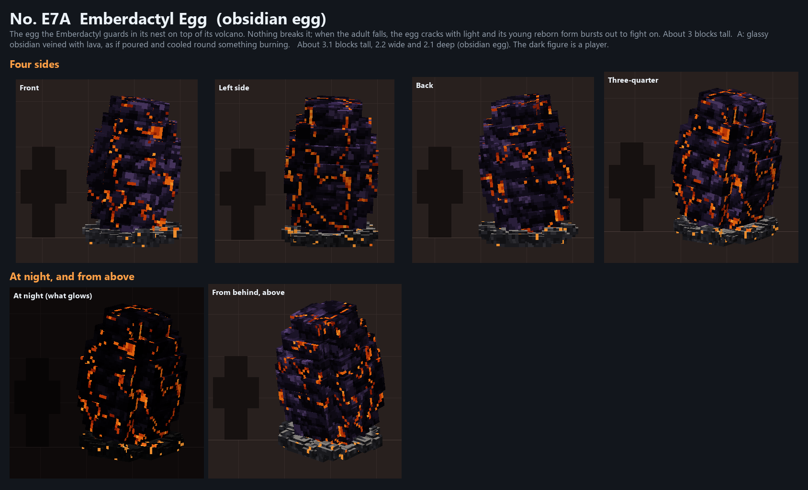
B: a crust of cooled magma, its plates split by bright cracks.
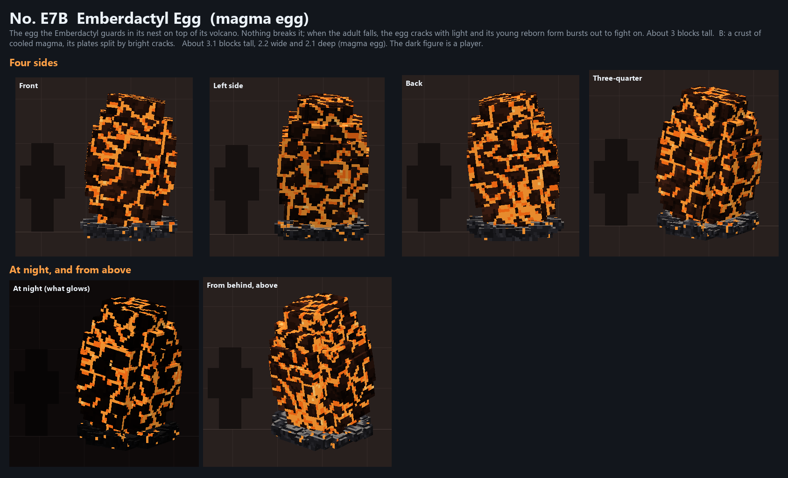
C: a shell of smoky see-through glass, the young one curled up inside it, glowing.
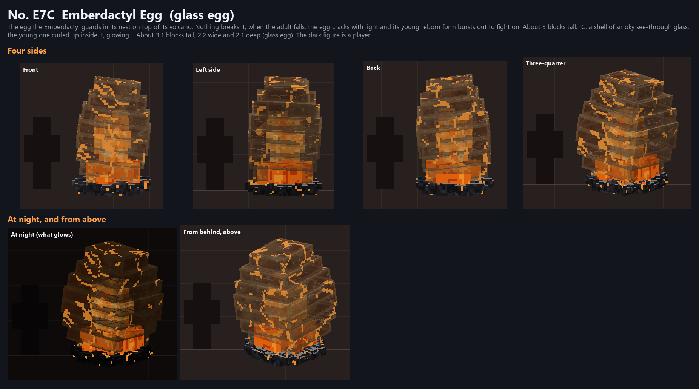